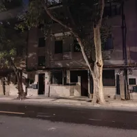
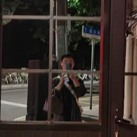
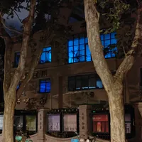
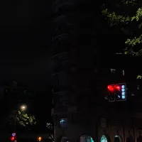
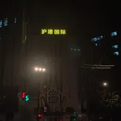

健完身回到公司打印了几份文件，坐地铁时却因此搞错方向，看着书坐过了好几站才发现自己又一次坐反了方向。连忙在交通大学下站，却发现末班车已经结束。
无奈之下只好计划骑车回公司，再用公司补贴打车回去。但考虑到手机电量所剩无几，而且我需要最新版共享单车放置手机帮我导航，就先充着电边走边找车（顺便打卡多邻国）。
走了一会我突然想到武康大楼离此不远，难得深夜无人，索性再去打个卡。夜晚的康平路寥寥无人，路灯昏黄，巨大的法国梧桐伫立道路两侧，浓密的树荫遮蔽夜空。那些已经存在好多好多年的历史建筑在这样的夜晚里更加沉默，隐秘在阴暗之中，仅能借助路灯瞧见其些许饱经风霜的样貌。

康平路与余庆路路口，有一间全是镜子的亭子。

余庆路上有一间泛着蓝光的房子，颇为诡异

深夜的武康大楼确实没什么人，视野很好，但拍摄难度很高，实在拍不出什么好照片。

在武康大楼附近转了一圈终于找了目标共享单车，遂骑车返回公司。
余庆路上有两间武警岗亭，因为没开灯，我隐约才看见里面有人站岗。路过第一间时我还在猜里面是真人还是雕像，第二间自习看了一眼，才意识到是会动的真人。
在一个十字路口等红灯的时候，发现马路对面有着沪港国际几个大字，巧的是公司在深圳的园区叫深港国际，遂分享给公司的同事。
